Take-home Exercise 1 - Age-Sex Pyramid
Overview
This document serves as a submission for Take-home Exercise 1 as required by the course ISSS608 Visual Analytics and Applications.
Objective
How do we analyze population trends? One common graphical representation is the age-sex pyramid, also known as the population pyramid. It reveals the past and present of one’s population, and gives an idea of the mortality and fertility rates of a country. In this exercise, we use Tableau to create age-sex pyramids of nine planning areas of Singapore in a single view using a trellis chart.
The Data
For this exercise, we used the “Singapore Residents by Planning Area / Subzone, Age Group, Sex and Type of Dwelling, June 2022” dataset available from the Department of Statistics, Singapore.
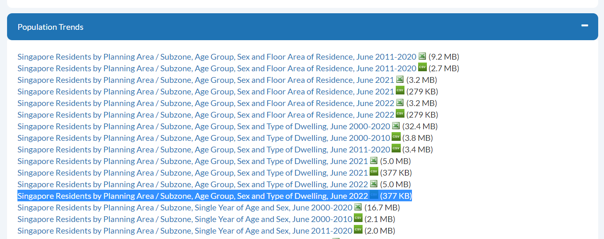
The dataset consists of the following data:
Planning Area (PA)
Subzone (SZ)
Age Group (AG)
Sex
Type of Dwelling (TOD)
Population (Pop)
Visualization Process
After opening respopagesextod2022.csv, we get the following preview:
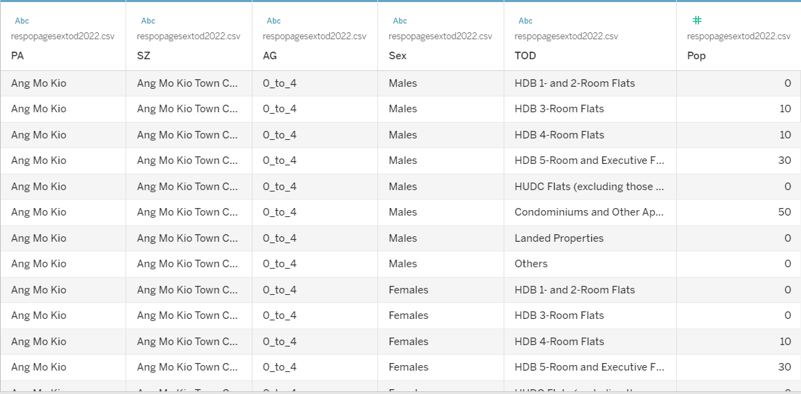
Setting up the trellis chart
Following the guide by Luke Stanke called “Trellis Chart in Tableau”, we can setup our trellis through the following steps.
Select Create Calculated field from the Data pane. Create a calculated field called
Indexand typeINDEX()as the calculation.Create a parameter called
Total Columnsand set it as 3.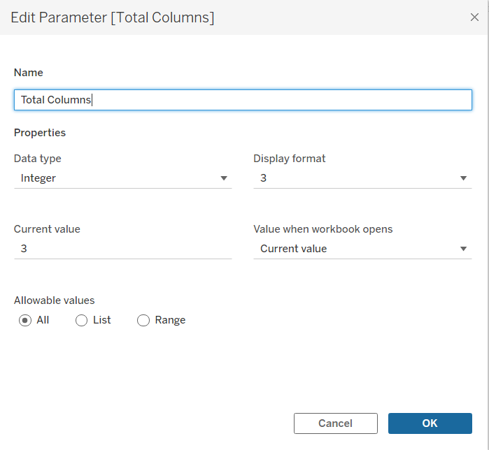
Create another calculated field called
Columnand set it as([Index] - 1) % [Total Columns]. Similarly, create a calculated field calledRowand set it as(([Index] - 1) - [Column]) / [Total Columns]).We should end up with the following measures and parameters.
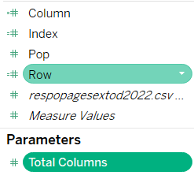
- Drag
ColumnandRowto Columns and Rows respectively. DragPAandIndexto Detail. At this point, we have our skeleton for the trellis chart.
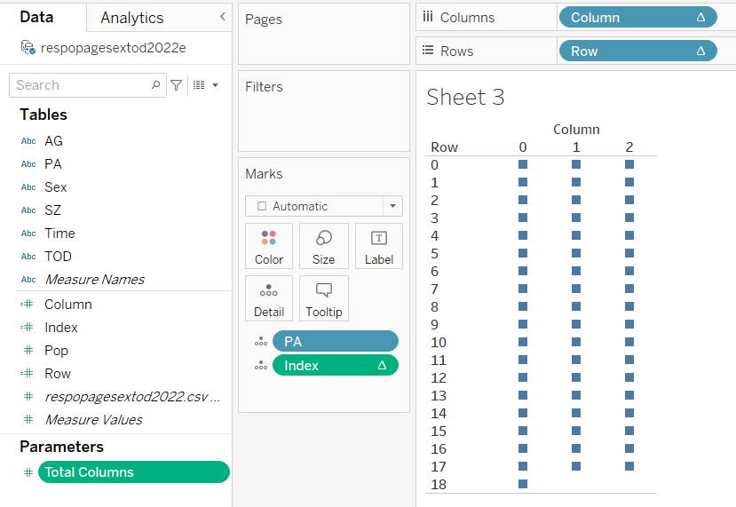
Adding the data and creating the base pyramid
- Now to get to the fun part. First we create two more calculated fields:
Femaleset asSUM(IF [Sex] = 'Females' THEN [Pop]END), andMaleset asSUM(IF [Sex] = 'Males' THEN [Pop]END). - We then drag these two new fields into Columns. We should get bar graphs similar to figure below.
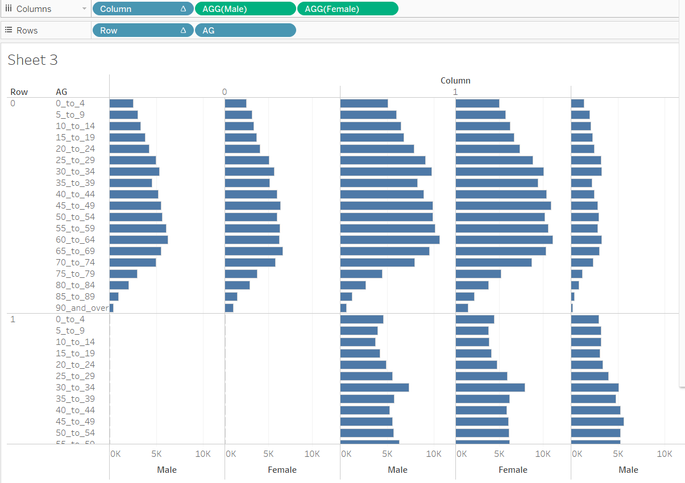
- That doesn’t look right! To create the pyramid shape of we’re familiar with, we need to use Edit Axis on the
Maleside of the axis and tick “Reversed” under “Scale” as shown below.
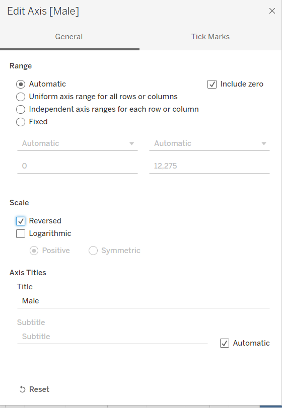
Now we have the right shape! But something is still missing…
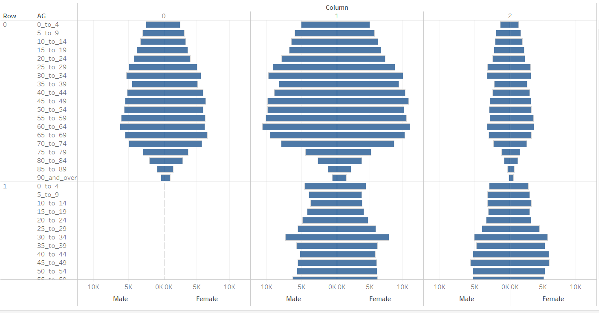
- Drag the
Sexfield into the Color mark to differentiate the male and female bars. In this case, blue and red were used respectively.
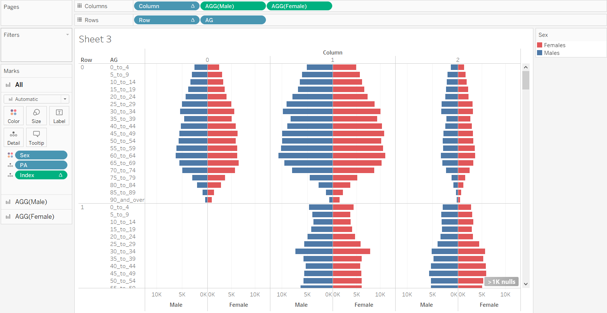
- Now some planning areas seem to have empty cells. Specifically, by filtering the
PA, we find out that there are 14 planning areas with 0 population.
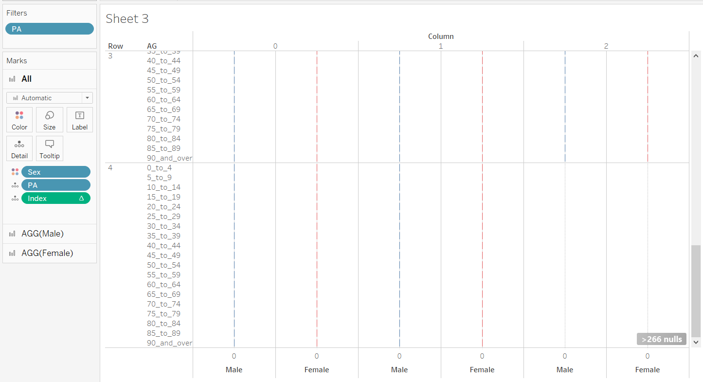
To fix this, we drag the PA field into Filter and set the condition as shown in the dialog box below.
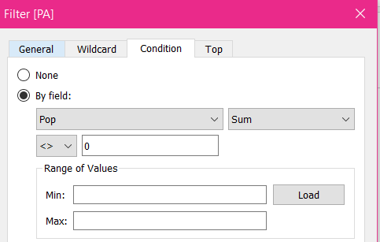
Now we should have only displayed Age-Sex pyramids for those planning areas with population data.
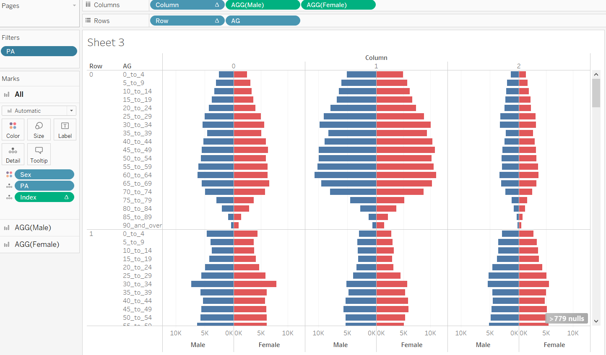
Other formatting specifications
Since we’re limited by the number of age-sex pyramids seen in one view (without scrolling), it’s important to display the more relevant planning areas first. In this case, we will be sorting the sizes of the population from greatest to least so the planning areas with the largest population sizes according to the dataset will be shown first.
To do this, we sort
PAby thePopfield as shown in the screenshot below.
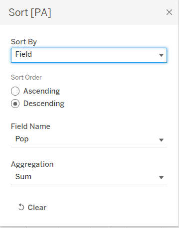
- To limit the number of rows, we can filter
Rowto be set from 0 to 2.
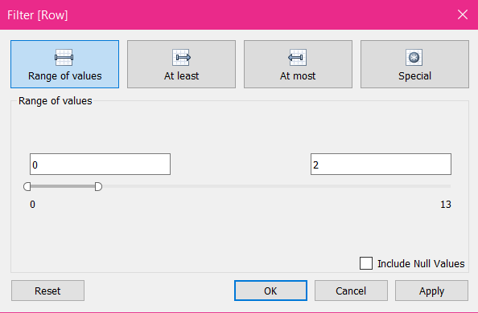
As shown below, the row only goes as far as index = 2, making it a 3x3 trellis chart.
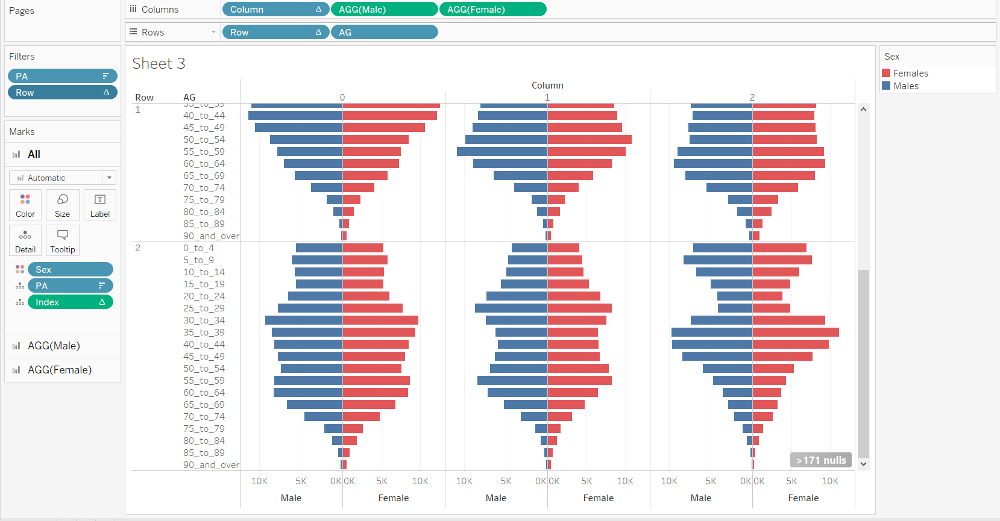
- To remove the
ColumnandRowheaders, we untick Show Header to exclude the column and row numbers.
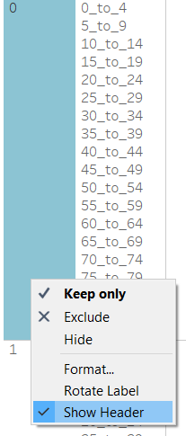
- To add a label for planning areas, we can right click the lowest bar, and press Annotate \(\rightarrow\) Mark to create a label. Set it as
<PA>to display the planning area.
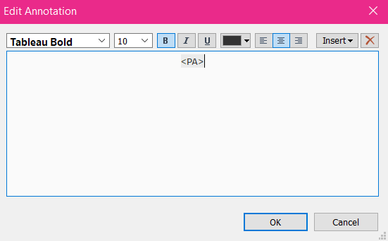
Remember to remove the Shading and Line to keep the text as is.
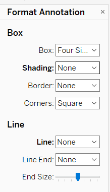
The figure below shows the different pyramids labelled with their respective planning areas.
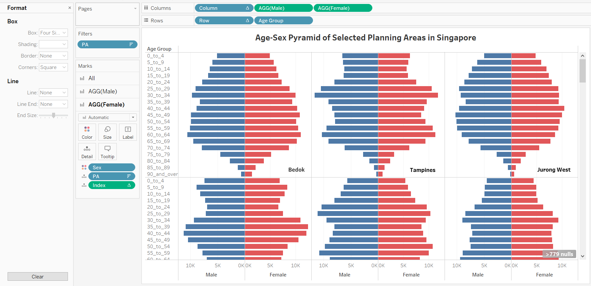
- To fix the axis describing the population values, we set the tick marks as shown in the screenshot below.
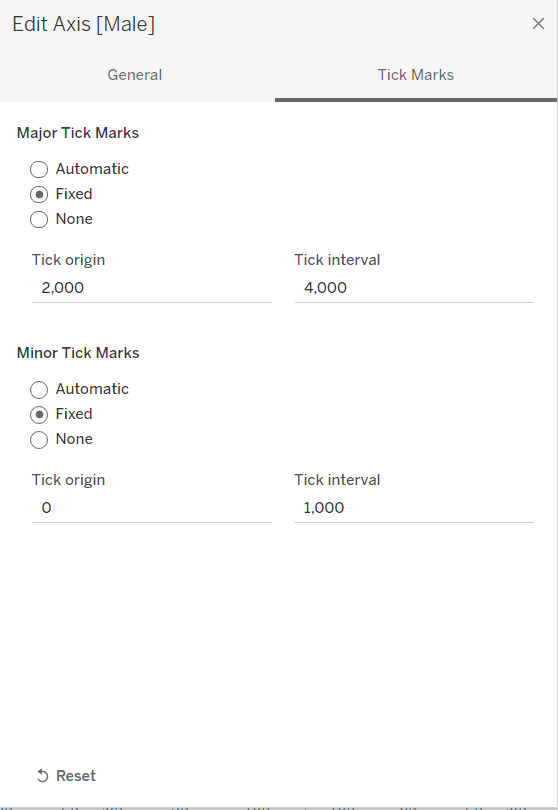
- Last but not the least, we reverse the order of the
Age Groupvalues so that it decreases from older to younger.
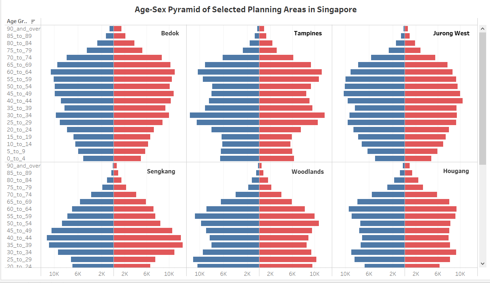
The finished product can be found on Tableau Public. A sample is embedded below, however formatting is affected by the width restrictions of the page. A still image of the dashboard can be found in the next section.

Short Analysis

For this analysis we will be taking a look at nine planning areas, specifically, Bedok, Tampines, Jurong West, Sengkang, Woodlands, Hougang, Yishun, Choa Chu Kang and Punggol. These planning areas have the largest populations recorded in the dataset.
The pattern of the population pyramids
While each pyramid has slight differences, a recurring observation from each pyramid is that the larger populations are around the middle ages (40-70s). According to National Geographic, this type is called “Constrictive” and means that these areas have relatively low fertility rates and high life expectancy. The trend states that the population is aging.
Taking a look at some specific age-sex pyramids, we observe that Punggol has the most unique shape. Since Punggol is relatively newer in the township development aspect, it makes sense that mostly people in their late 30’s to early 40’s are moving there. It is reportedly popular for homebuyers, which people in their 20’s are usually not. With this, it also makes sense that these people are starting their families, therefore younger children are more present than teens and young adults.
Though on opposite sides of Singapore, Bedok and Jurong West are the closest to having a perfect constrictive shape. Bedok is a mature residential estate and Jurong West is non-mature.
What this means for Singapore
Constrictive population pyramids are usually a sign of a developed country with high economic development. Good healthcare leads to higher life expectancy and quality education is linked to lower fertility rates. However, with the aging population comes concerns about caring for the elderly and the eventual lack of manpower.
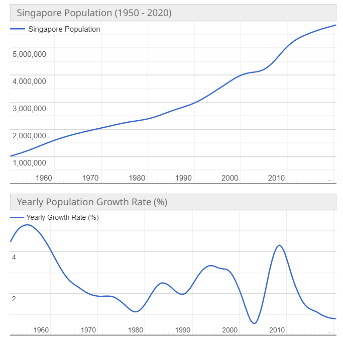
As suggested by the pyramids, the growth rate of Singapore is slowing down. This is confirmed by the population and growth rate graphs above. For the population graph, we can see that the curve is slowly flattening out. The growth rate is explicitly dropping since before 2010. Measures may need to be taken to encourage an increase in fertility rates.